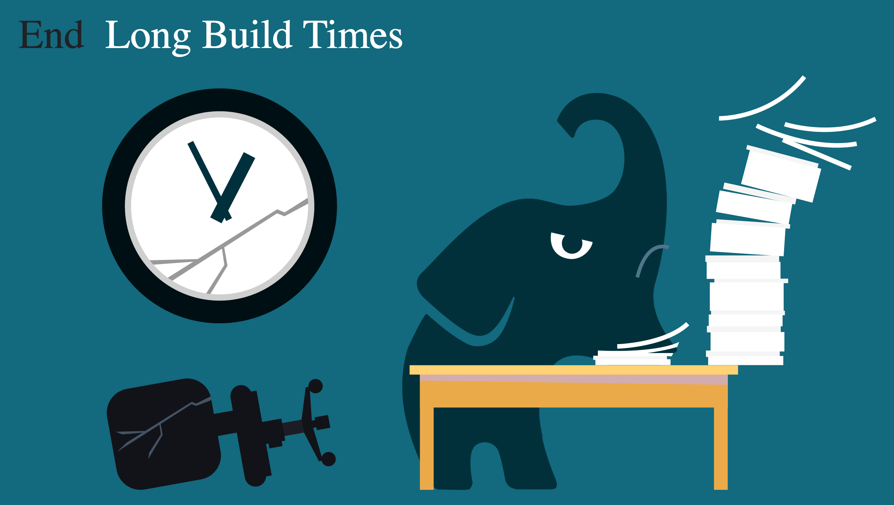
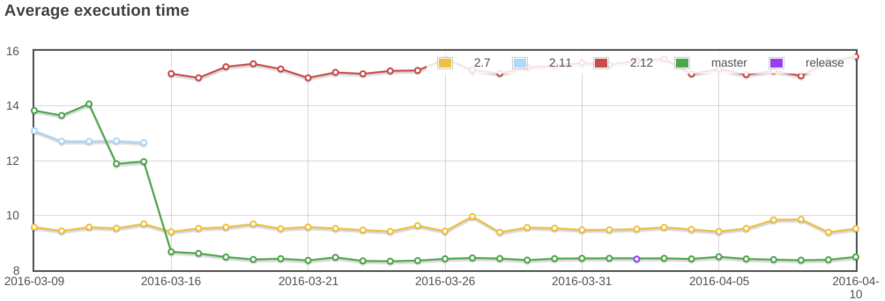
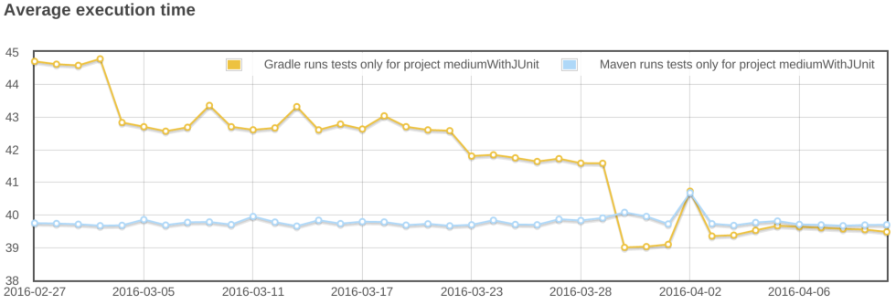

speaker {
name 'René Gröschke'
work 'Principal Engineer @ Gradle Inc.'
twitter '@breskeby'
github 'breskeby'
email 'rene@gradle.com'
hobbies 'nobody cares...'
}@Berlindroid
Gradle 3.0 - What's in for Android Devs
René Gröschke
Who am I
No big bang release
3.0-milestone-2 available for testing now
3.0-rc-1 likely being released tomorrow
Continuous Builds
monitors task inputs / outputs
triggers rebuild if any of both has changed
gradle build -tPerformance is a feature

Dedicated Performance Burst
latest Gradle 2.14.1 release is the fastest Gradle ever
reduced configuration time
faster script compilation
faster up-to-date checks
faster test execution
faster ide integration
ongoing effort
Configuration time speedup

Test execution speedup

Gradle daemon
Who’s using the daemon?
A long-lived background process
Avoids costly jvm bootstrapping
Benefits from warmed up hotspot compilation
Gradle daemon
# ~/.gradle/gradle.properties
org.gradle.daemon=trueMore daemon goodness
More robust by
Dealing better with memory leaks
Having clever expiration strategies
Use case parity with no daemon mode
More communicative
Leveraging daemon more in the future
On by default in 3.0
Kotlin Gradle DSL
Introducing Gradle Build Scans
|
|

What’s next
Composite Builds
Distributed Cache
Ongoing dedicated performance work
Gradle Inc
Motto: Build Happiness
Mission: To revolutionize the way software is built and shipped.
We’re Hiring: Gradle is hiring front-end, back-end, and core software engineers. Visit gradle.org/jobs to apply.
Thank you!
Slides and code : https://github.com/breskeby/talks/tree/master/160727-android-usergroup-berlin
Gradle documentation : http://gradle.org/documentation/
Gradle Build Scans : https://gradle.com
Sample Build Scan: https://scans.gradle.com/s/6mjjoq6hwr7kk
Follow me: @breskeby